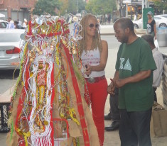
Engaging and celebrating the Senegalese community in West Harlem through a public mobile installation and a formal exhibition of stories and photographs.
Griots In ‘The Stuy’: A Neighborhood as a Living Archive
A public art exhibition of photographs along Tompkins & Myrtle Avenues, and an online archive of personal stories from Bed-Stuy residents.
My Baryo, My Borough: Oral Histories of Filipino America in Queens
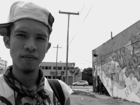
Archiving and sharing the legacies of the Filipino community in Queens through a community-curated collection of video-based oral histories.
Storyblock
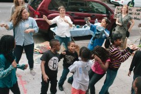
Creating an archive to celebrate the cultural richness of Kelly Street in the Longwood section of the Bronx.
Whose Streets?
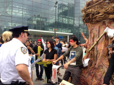
Mixed-media mural project addressing racial justice and solidarity within black and brown communities.
2014
Harlem on my Mind, too
Beluvid Ola-Jendai
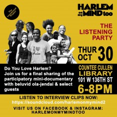
Documenting the narratives of Harlemites through a compilation CD project.
Neighborhood Portrait Series
Bridget Bartolini
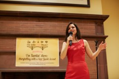
A sequence of city-wide community events that will invite people to come together and create a “portrait” of their neighborhood.
Beauty in Her Own Words: Salon Stories From Queens
Sukjong Hong
Creating bridges through visual art and storytelling between customers and neighbors of a local beauty salon.
Good Trade
Dennis RedMoon Darkeem
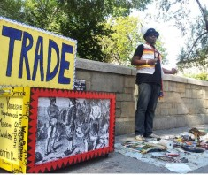
Re-creating the Native American custom of trade in an urban environment and allowing a mutual exchange between neighbors.
The Department of Local Affairs
Chloë Bass
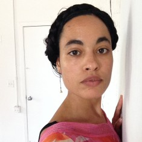
A social hub where community members can engage and share stories which will be collected Lonely Planet-style guidebook.
2013
The People's Laundromat Theater
Shani Peters
A laundromat-based film festival screening independent media from 32 filmmakers and media producers.
Portrait of the Community as a Block
Art Jones
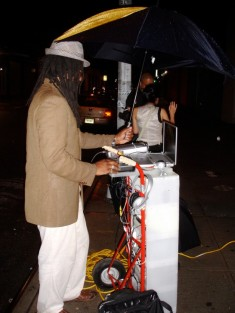
Stories, anecdotes, jokes, urban legends, and histories about buying and selling in the neighborhood.
Mapping Soulville
Aisha Cousins
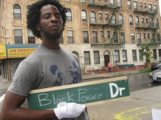
Creating a walkable timeline of Malcolm X’s life.
2012
The Garment Worker
Betty Yu
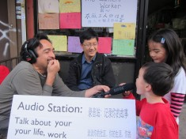
An interactive media installation highlighting unfair and abusive working conditions still experienced by workers in Brooklyn’s garment industry.
Giving Hope Away
Sinema White
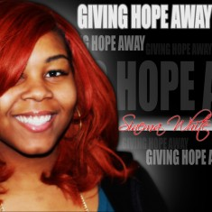
Sinema White brought her neighbors together to express their daily struggles and triumphs through song.
Yoga Body Prints and Principles
Suran Song
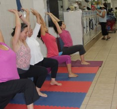
Transforming a Jackson Heights laundromat into a yoga studio.
Mind the Gap / LA Brecha
Hatuey Ramos-Fermin and Elizabeth Hamby
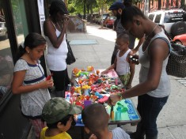
Collecting and envisioning new ideas for connecting the Mott Haven neighborhood with the Harlem River waterfront.
Images of Dignity
Hollis King
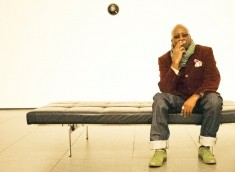
A temporary photo studio in a Harlem laundromat, capturing the identity and energy of a changing neighborhood.
Take me to the River
Haifa Bint-Kadi
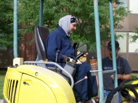
Using mosaic to bring attention to waterfront redevelopment and empower residents to become active in the discourse about community change.
Susu
Aisha Bell
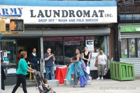
A fabric sculpture made from articles of clothing donated by Aisha’s neighbors.
2011
A Woodside Walk: Bubbles and Books
Micki Watanabe Spiller
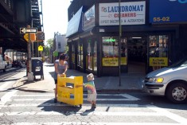
A series of literacy-based activities responding to public library budget cuts.
Ask me: Tell me
Karina Skvirsky
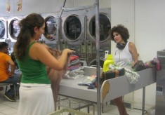
A postcard kiosk responding to gentrification in Jersey City.
My Very Own Porch on Ipanema Corner
LaTasha N. Diggs
A platform for longtime neighbors to share perspectives on the changing face of Harlem through video and prose.
Dispersing Planes II
Jabari Owens-Bailey
Collecting emigration stories and representing their transitions with small metal planes.
The Inwood Laundromat Language Institute
Hector Canonge
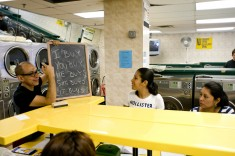
Transforming an Inwood laundromat into an English language classroom.
2010
Sustainable. Organic. Stewardship.
Tattfoo Tan
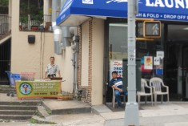
A workshop series aimed at creating a sustainable future through the cultivation of fresh produce.
Boomboxes and Soundtracks
Bayeté Ross Smith
A boombox tower and community mixtape.
Cycles
Hanalei Ramos and Jiny Ung
A documentary-style animated short based on the oral histories of Jersey City and Woodside residents.
2009
The Dirty Laundry Line
Tracee Worley
A hotline laundromat patrons can call to share their secrets.
Housing is a Human Right
Michael Premo
A multi-media documentary portrait of the struggle for “home.”
Photo Booth Without Borders
Carlos Martinez
A photo booth for participants to share their personal journeys.
2007
Sarah Kolker
Sarah Kolker
Harlem youth illustrate their visions of their neighborhood on ceramic tiles.
Book Bench
Stephanie Dinkins
A community book exchange and public performance.
2006
Shinique Smith
An artist book distributed to neighbors at the laundromat.
Rudy Shepherd
A drawing cart inviting neighbors to sit, draw, and make conversation.
Miriam Neptune
A documentary film addressing the experiences of Haitians in the Dominican Republic.